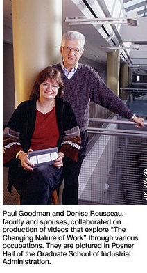

ABOUT GOODMAN FACES OF WORK
#work #paulgoodman #legacy #facesowork #globaltheory
↬ The 2013 Carnegie Mellon International Film Festival: Faces of Media is pleased to present a
new permanent component this year,
"Goodman Faces of Work" - a memorial
tribute to Dr. Paul Goodman (1938-2012).
A
world-renowned filmmaker, psychologist, and Carnegie Mellon professor, Paul was an active proponent
of introducing global theory and a wide variety of multimedia elements into the classroom.
The annual "Goodman Faces of Work" component will incorporate four of Paul's films along with seven
international films in our series that relate to Paul's professional focus: the theme of
work.
↬
It is our goal to continue Paul's mission of
acquainting Carnegie Mellon students and the wider Pittsburgh community with the intricacies of
global working environments and societies. In support of his vision, the festival intends
to develop and nurture collaborative relationships among faculty and students from all Carnegie
Mellon schools and colleges. We have received the support of over 30 professors who have agreed
to participate by, variously: including film screenings in their course syllabi; inviting the
directors of certain films to give lectures to their classes; and serving as moderators for
audience discussions following selected screenings. By integrating festival screenings into
interdisciplinary academic curricula, students will learn about
global culture,
media, work, and other humanistic themes relevant to their disciplines.
↬ We appreciate Paul's ongoing efforts to explore the complex theme of
work
in both international and local contexts.
Whether it
concerned a steelworker, a university president, an artist, a farmer, or a fisherman, Paul saw the
inherent value in how these individuals contributed to their communities and to our greater economy.
We hope to continue his legacy by highlighting these stories of
work
in the
Goodman Faces of Work component of our film festival, and we are
eager for audiences to join us in discussions about
work in a variety of
global contexts!
"Goodman Faces of Work" is sponsored by the estate of Paul Goodman.
Return to Top
INTERNATIONAL FILMS
Directed by Nikolaus Geyrhalter, Germany, 75 min, 2012
Friday, February 22nd, Carnegie Mellon McConomy Auditorium, 6:30pm
*Preceded by screening of
Nurse by Paul Goodman
About the film...
Crocodile in the Yangtze | buy tickets
Directed by Porter Erisman, China/USA, 75 min, 2012
Friday, March 22nd, Carnegie Mellon McConomy Auditorium, 7:00pm
*Director will attend
*Preceded by screening of
CERT by Paul Goodman
About the film...
Sushi: The Global Catch | buy tickets
Directed by Mark Hall, USA/Poland/Japan/Australia/Singapore, 75 min, 2011
Sunday, March 24th, Carnegie Mellon McConomy Auditorium, 5:30pm
*Preceded by screening of
The Lobstermen by Paul Goodman
About the film...
Directed by Frank Piasechi Poulsen, Germany/England/Congo, 75 min, 2011
Wednesday, April 3rd, Carnegie Mellon McConomy Auditorium, 7:00pm
About the film...
Directed by Scott Hamilton Kennedy, USA, 97 min, 2012
Saturday, April 6th, Carnegie Mellon McConomy Auditorium, 7:00pm
*Director will attend
About the film...
Directed by Nikolaus Geyrhalter, Austria, 90 min, 2011
Wednesday, April 10th, Carnegie Mellon McConomy Auditorium, 5:00pm
About the film...
Directed by Anthony Baxter, 95 min, 2011
Wednesday, April 10th, Carnegie Mellon McConomy Auditorium, 7:00pm
*Preceded by screening of
University President by Paul Goodman
About the film...
Return to Top
ABOUT PAUL

Paul Goodman was an acclaimed psychologist, author, researcher, and filmmaker who first joined the Carnegie Mellon faculty in 1972. He went on to become a tenured professor of industrial administration and psychology in 1979 and the honorable Richard M. Cyert Professor of Organizational Psychology in 2000.
Many of Paul's most notable contributions to the Carnegie Mellon community were centered on his globalization of the campus. By focusing on work and technology both at home and abroad, he was able to make outstanding educational connections between the university and international development. As Mark Kamlet, provost and executive vice president at Carnegie Mellon, asserts, “He was successful in developing strategic partnerships in Asia, Latin and South America, the Middle East and South Africa. He has been a champion of the university around the world, helping to expand Carnegie Mellon’s reach and influence while raising education standards in developing countries.” Some of his initiatives abroad included the exploration of environmental issues and technological development at leading universities in Brazil and Chile, the establishment of a program designed to improve the quality of engineering schools in India, the development of a program to build a leadership institute to facilitate Jewish-Arab co-existence in Israel, and the building of a new School of Information Systems in Singapore.
While Paul strongly emphasized global awareness in his teaching and research, he was also dedicated to exploring the theme of work in the local Pittsburgh community. He saw the crucial value in everyday workers who contribute to our economy and social wellbeing. His exploration of workers in action granted him the opportunity to not only learn more about different business strategies, but also to embark on exciting projects using his favorite teaching mechanism – filmmaking. Among more than 20 educational films and documentaries that he produced, he highlights the important but often overlooked work of individuals such as a nurse, a steelworker, a glass blower, a fisherman, and a university president.
Paul shares his global business research and strategies with us not only through the nine books and dozens of articles he has published, but also through short films and full-length documentaries that offer insight into other cultures and their ideas for economic development. Through a variety of mediums, he shows us how the valuable multidisciplinary work of people from around the world improves our local and global societies in countless ways.
For more information about Paul Goodman's work, please see these articles:
Carnegie Mellon News: Obituary
Carnegie Mellon Today: "Escola de Samba"
Carnegie Mellon Magazine: "Steelworker"
Pittsburgh City Paper: A Conversation with Paul
The Economist: The Cult of the Dabbawalas
Tepper School of Business: Faculty Directory Page
Return to Top
PAUL'S FILMS
We are debuting several of Paul’s short films before the international films in this series so that audiences can better understand his dedicated appreciation to the many workers in Pittsburgh and abroad who carry out the daily functions so necessary to economic stability and growth. Paul created these films in the 1980s, and, despite the picture quality, it is clear that he was decades ahead of his time in his crucial focus on the developing local and global economies that he explored.


Before our sneak preview screening of Danube Hospital, which reveals how state-of-the-art computer technology and robot-like transporters that we once imagined only in science fiction have become a reality in an Austrian hospital, we will premiere Paul's short film Nurse, an analysis of the daily work-life of one of the health industry’s most essential employees. Sushi: The Global Catch, a documentary about how sushi has contributed to the globalization of Japanese cuisine while leading to world-wide demand for the increasingly endangered bluefin tuna, will be preceded by Goodman's The Lobstermen, the story of a beloved veteran and father who was a self-employed lobsterman for 65 years.
Paul had a deep interest not only in the workers from the Pittsburgh community, but also in the students, faculty, and administrators whose work helped Carnegie Mellon University grow into the acclaimed institution it is today. Before our premiere of the popular Chinese documentary Crocodile in the Yangtze, which highlights entrepreneur Jack Ma’s journey in establishing what would become a giant internet startup company, we will screen Paul's film CERT, a compelling first look at the small Carnegie Mellon cybersecurity center that has now evolved into a widely renowned program that counters sophisticated cyber threats on campus and nationwide. University President, Goodman's short film that focuses on a Carnegie Mellon University president in his attempt to foster connections among technology, business, and the humanities, will accompany the British documentary You’ve Been Trumped, the underdog story of a Scottish farmer who takes on a more ruthless company president, Donald Trump, in the battle over environmentally endangered lands.


Return to Top